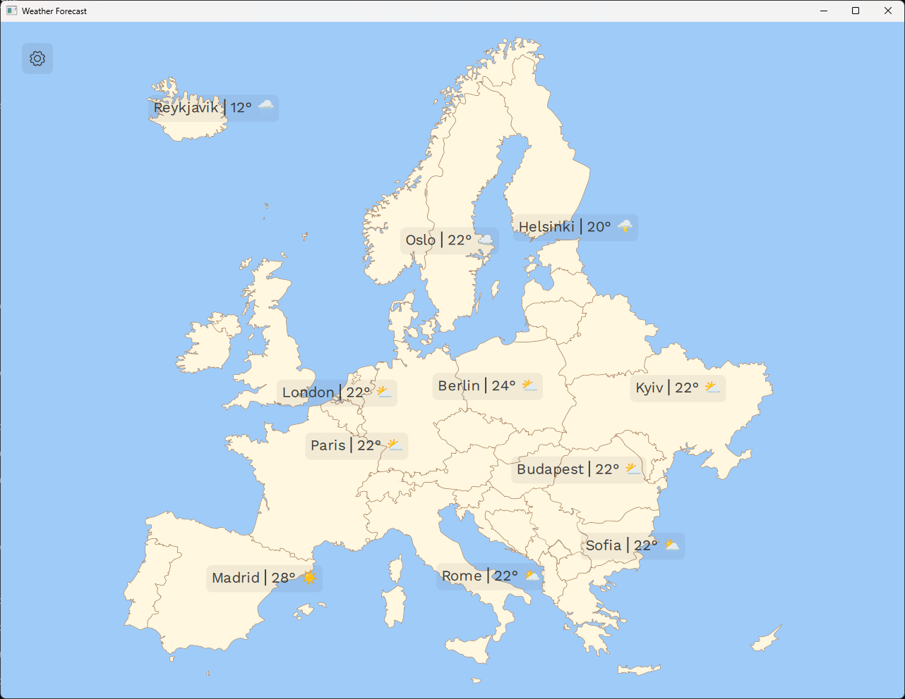
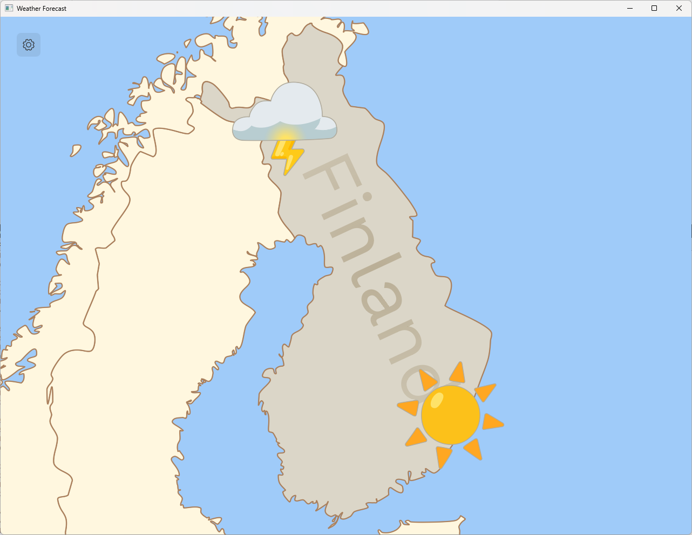
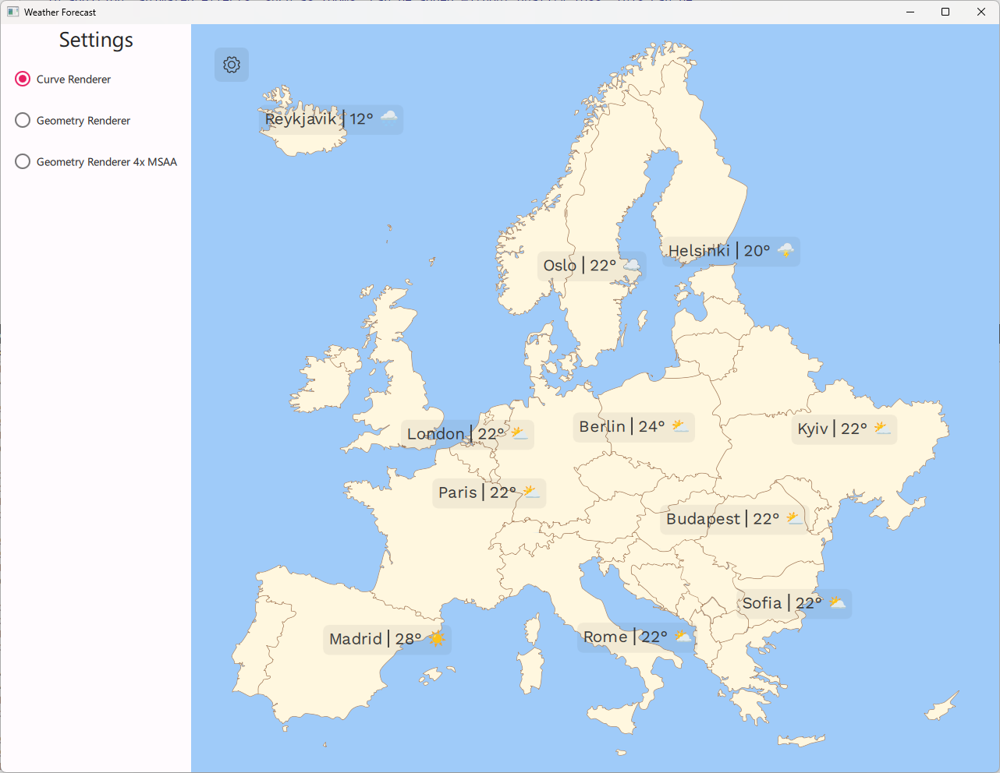

Weather Forecast Example
A Qt Quick Shapes example demonstrating different ways to uses shapes in an application.

This example is designed to look like a weather forecast app for Europe. It demonstrates a few different ways the QtQuick.Shapes API might be useful in an application, and how different properties can affect the quality and performance of the rendering.
All graphics in the example originated as .svg files which were converted to QML using the svgtoqml tool.
Different Types of Shapes
The QtQuick.Shapes module provides APIs to render vector graphics in a Qt Quick application. This is an alternative to using a raster Image for 2D graphics and is useful if the target size of the image is not known up front. With an Image, the rasterized pixmap is precreated at a specific size and scaling the image will either add or subtract information. This will result in pixelation or blurring, depending on whether its smooth property is set.
With QtQuick.Shapes the shapes are described mathematically, as a set of curves and line segments, and thus they can be scaled arbitrarily without introducing artifacts.
In the Weather Forecast example, there are three main uses of shapes:
- User interface icons, such as weather symbols and the cog wheel on the "Settings" button.
- The overview map of Europe.
- Country name labels visible when zooming into the map.
User Interface Icons
While using appropriately sized raster images for icons is usually preferred for performance reasons, it may be inconvenient if the same application is targeting many different screen sizes. In order for the icons to look crisp on all screens, you have to pregenerate a large set of different sizes. QtQuick.Shapes makes it possible for the application to do this adaptation at runtime, by including the icons as shapes and rendering them at a size appropriate for the current screen size.
When running the Weather Forecast example on a desktop system, this can be seen by making the application window larger or smaller. The weather symbols adapt to the window size without reducing quality.
In addition, animated effects, such as zooms, can be added without quality loss. This can be seen by hovering over the weather symbols.
So for any use case where the target size is unknown, or the number of possibilities is so large that creating specific pixmaps for all would be impractical, using shapes for icons can be useful and worth the performance cost of rasterizing the shapes at runtime.
Map of Europe
The Weather Forecast example also uses a vectorized map of Europe. This makes it easy to create effects such as zooming into the map when we want to emphasize a specific country. In addition, since each country is a separate sub-shape, we can apply different fills and strokes to them independently.
Click on the map to zoom into a country. The scale will be adjusted so that the country shape fills the window and the fill color will be slightly darker.

Note: The weather symbols on the zoomed map are the same assets as in the original view, but at a much larger size.
Country Name Labels
When zooming on a country, its name appears across the country shape. This label is also created with QtQuick.Shapes, by using the PathText component type which converts a string into renderable shape.
This is not the typical way to create text labels in Qt Quick. For most purposes, using the Text element is the most efficient and convenient approach. However, there are certain visualization effects supported by QtQuick.Shapes which is not supported by the regular Text element. Fill gradients is one such effect.
ShapePath {
strokeColor: "transparent"
strokeWidth: 1
joinStyle: ShapePath.RoundJoin
fillRule: ShapePath.WindingFill
fillGradient: RadialGradient {
centerX: textShape.width / 2
centerY: textShape.height / 2
centerRadius: textShape.width / 2
focalX: centerX; focalY: centerY
GradientStop { position: 0; color: "#b0ab9d7f" }
GradientStop { position: 1; color: "#5cab9d7f" }
}
PathText {
id: textPath
text: textLayer.label
font.family: workSansRegular.font.family
font.pixelSize: 64
}
}
To illustrate this, the Weather Forecast example applies a subtle radial gradient to the opacity of the country labels, making them seem to blend into the map on the edges.
Different Types of Renderers
The Weather Forecast example illustrates multiple different use cases for QtQuick.Shapes. In addition, it can be used to see the upsides and downsides of the different renderers the module supports.
Click on the cog wheel in the upper left corner to open a settings panel, where different approaches to rasterization can be selected.

QtQuick.Shapes supports two different renderers, selectable using the preferredRendererType property. The preferred renderer in the example is CurveRenderer. This supports hardware-accelerated curves and built-in antialiasing. It is not the default renderer in QtQuick.Shapes, but in the example it is automatically selected on startup.
The default renderer in Qt Quick Shapes is the GeometryRenderer. This flattens the curves of the shape into very small straight lines and draws the shape as a polygon. Redrawing the shape is more efficient than with the CurveRenderer, but at certain scales, the fact that curves are approximated by lines will be visible.
In addition, the GeometryRenderer does not support antialiasing, so you will typically want to enable multi-sampling when using it. This can be done by rendering the shapes into layers and enabling multi-sampling on these. Since we will render the shapes into off-screen buffers in this mode, it consumes additional graphics memory as well as an additional rendering pass for each shape.
layer.enabled: msaaCheckBox.checked
layer.samples: 4
The settings panel also provides the option to use the GeometryRenderer together with 4x multi-sampling, so that the quality of this can be compared to the built-in antialiasing of the CurveRenderer.
Running the Example
To run the example from Qt Creator, open the Welcome mode and select the example from Examples. For more information, visit Building and Running an Example.